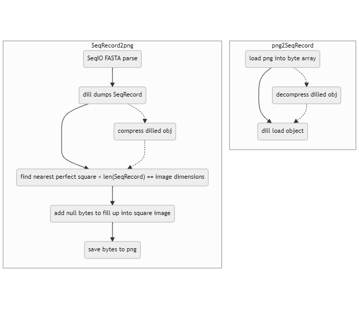

fasta2png
Kacper Dudczak, Aleksander Luboński, Maciej Michalczyk
W skrócie
- prosty sposób na bezstratne przekształcenie obiektu SeqRecord biopythona do postaci pliku png (w zasadzie każdy arbitralny obiekt da się przekształcić)
- powstały plik png jest otwieralny w każdym edytorze do plików graficznych
- prosty sposób odczytu pliku png do obiektu w kodzie (one-liner)
Opis działania

- powyższy schemat skupia się na obsłudze sekwencji, ale pierwszy krok z podschematu SeqRecord2png można pominąć i zastąpić obsługą jakiegokolwiek obiektu
- wykropkowany przebieg na schematach przedstawia kroki w dodatkową kompresją:
- w normalnym podejściu kompresja leży całkowicie na etapie zapisu do pliku png
- z dodatkową kompresją, kompresowany jest zserializowany obiekt, co okazało się skutecznym sposobem dodatkowego zmniejszenia wielkości pliku (zazwyczaj kosztem szybkości działania)
- dostępne (do tej pory testowane i zaimplementowane) algorytmy dodatkowej kompresji:
- aby png był poprawnie odczytywany i traktowany jako obraz po kompresji, trzeba wyliczyć wymiary takiego obrazu - znajdowany jest najbliższy idealny pierwiastek wielkości ciągu bajtów, który chcemy przekształcić w obraz, dzięki czemu uzyskiwane sa wymiary n x n.
- często się zdarza, że brakuje pewnej ilości bajtów, aby była wystarczająca ilość danych na taki kwadrat, więc uzupełnia się dane pustymi bajtami, aby dopełnić brakującą część - ma to niewielki wpływ na wielkość pliku
- aby nie dopełniać danych pustymi bajtami, obraz musiałby być prostokątem, ale to wymagałoby znalezienia “środkowych” dzielników długości ciągu bajtów, co jest mniej wydajne w pythonie niż najbliższy idealny pierwiastek (przynajmniej metody, które wykorzystywaliśmy do tego były wolniejsze, ale może jest na to jakiś sposób)
- plik png jest zapisywany w domyślnej kompresji, z głebią 8 bitową
Benchmark
- porównanie (skromne) było przprowadzone tylko na sekwencjach nukleotydowych w formacie FASTA
- była również próba porównania tej metody względem wczytywania surowej fasty, pickle obiektu (binarka), skompresowanej fasty do .gz (tak jak ściągniety plik z NCBI) oraz skompresowanego pickla do .gz - png z każdym z nich wygrało lub ewentualnie było na równi (jedynie pickle potrafił doścignąć). Niestety, nie został ten test zapisany.
- zstandard był uruchamiany z następującymi ustawieniami: level = 11, threads=-1
- poniższe testy były wykonane na komputerze z i7-11700K, 32 GB ram oraz WD Blue SN550 1 TB M.2 PCIe NVMe 3.0
Zapis
|
type |
file name |
original file size (MB) |
new file size (MB) |
exec time (s) |
| 0 |
standard |
NC_017186.fna |
9.90208 |
2.70461 |
1.55734 |
| 1 |
ppm |
NC_017186.fna |
9.90208 |
2.18798 |
1.09161 |
| 2 |
lz4 |
NC_017186.fna |
9.90208 |
3.61305 |
0.494656 |
| 3 |
bz2 |
NC_017186.fna |
9.90208 |
2.46714 |
0.678548 |
| 4 |
zstd |
NC_017186.fna |
9.90208 |
2.61913 |
1.08084 |
| 5 |
standard |
caenorhabditis_elegans.fna |
96.8361 |
29.5382 |
13.8723 |
| 6 |
ppm |
caenorhabditis_elegans.fna |
96.8361 |
23.574 |
10.9034 |
| 7 |
lz4 |
caenorhabditis_elegans.fna |
96.8361 |
38.4445 |
4.0271 |
| 8 |
bz2 |
caenorhabditis_elegans.fna |
96.8361 |
26.3349 |
6.25205 |
| 9 |
zstd |
caenorhabditis_elegans.fna |
96.8361 |
28.2227 |
2.78426 |
Odczyt
|
type |
file name |
file size (MB) |
exec time (s) |
| 0 |
bz2 |
bench\caenorhabditis_elegans_bz2.png |
26.3349 |
2.7908 |
| 1 |
lz4 |
bench\caenorhabditis_elegans_lz4.png |
38.4445 |
0.386278 |
| 2 |
ppm |
bench\caenorhabditis_elegans_ppm.png |
23.574 |
3.57138 |
| 3 |
standard |
bench\caenorhabditis_elegans_standard.png |
29.5382 |
0.340723 |
| 4 |
zstd |
bench\caenorhabditis_elegans_zstd.png |
28.2227 |
0.206723 |
| 5 |
bz2 |
bench\NC_017186_bz2.png |
2.46714 |
0.290505 |
| 6 |
lz4 |
bench\NC_017186_lz4.png |
3.61305 |
0.0407304 |
| 7 |
ppm |
bench\NC_017186_ppm.png |
2.18798 |
0.303751 |
| 8 |
standard |
bench\NC_017186_standard.png |
2.70461 |
0.0344474 |
| 9 |
zstd |
bench\NC_017186_zstd.png |
2.61913 |
0.0165492 |
Repozytorium
Kod jest publicznie dostępny:
https://github.com/phenolophthaleinum/fasta2png.
(przepraszamy za nieporządek ;) )